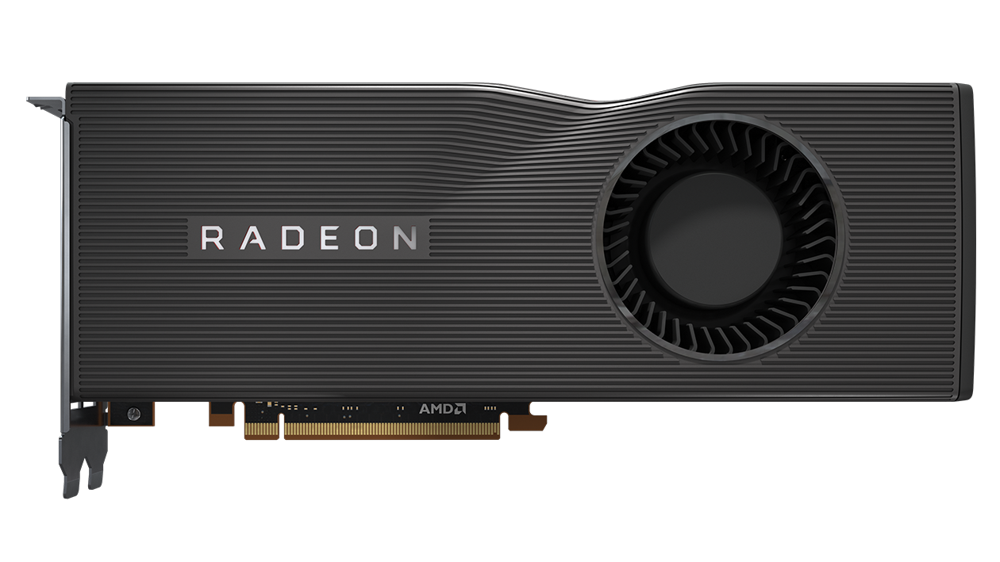

|  | Radeon (/ˈreɪdiɒn/) is a brand of computer products, including graphics processing units, random-access memory, RAM disk software, and solid-state drives, produced by Radeon Technologies Group, a division of Advanced Micro Devices (AMD). The brand was launched in 2000 by ATI Technologies, which was acquired by AMD in 2006 for US$5.4 billion. |
Radeon Graphics is the successor to the Rage line. Three different families of microarchitectures can be roughly distinguished, the fixed-pipeline family, the unified shader model-families of TeraScale and Graphics Core Next. ATI/AMD have developed different technologies, such as TruForm, HyperMemory, HyperZ, XGP, Eyefinity for multi-monitor setups, PowerPlay for power-saving, CrossFire (for multi-GPU) or Hybrid Graphics. A range of SIP blocks is also to be found on certain models in the Radeon products line: Unified Video Decoder, Video Coding Engine and TrueAudio. |
|